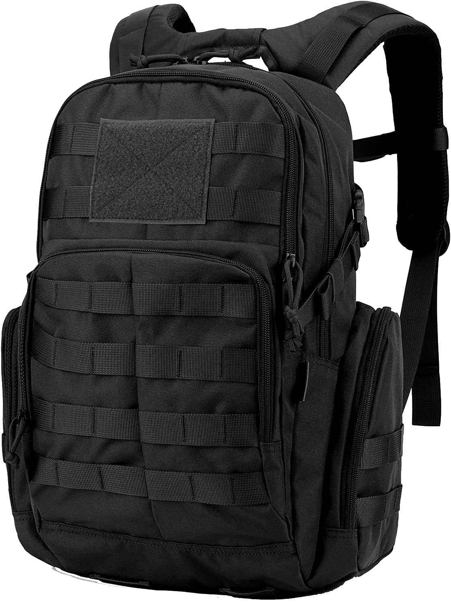

↑
Accueil
Produits
Tissu
Partenariats
Qui sommes nous ?
Nous contacter
///
Derniers produits

Sac à dos d'intervention
Modèle avec dossier rigide, équipé de doubles poches à l'avant et sur les côtés.
Tailles des lanières réglables.
Taille - 40L
Coupe - Droite
Composition - Couches extérieures et intérieures : 100% textique (plastique recyclé)
Numéro d'article - 1000000000000
T-shirt regular avec capuche
T-shirt regular gris ou noir.
Manches courtes et capuche intégrée.
Modèle avec col livre et fermeture éclair.
Taille - 174-178cm
Coupe - Regular slim
Composition - Doublure 100% textique (plastique recyclé)
Numéro d'article - 1000000000001